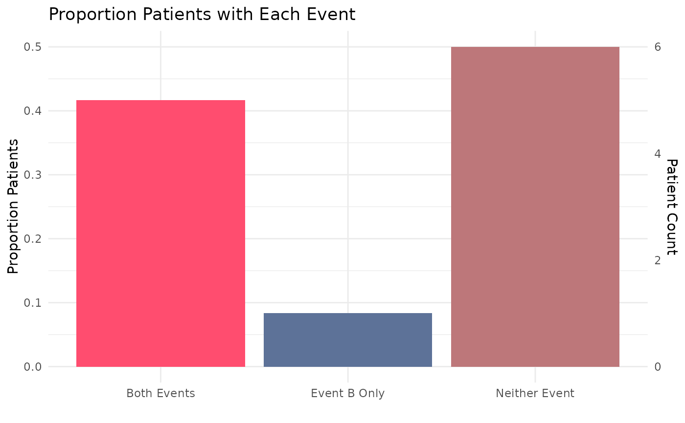

Using the tabular output generated by prc_process, this function will build a graph to
visualize the results. Each function configuration will output a bespoke ggplot. Theming can
be adjusted by the user after the graph has been output using + theme(). Most graphs can
also be made interactive using make_interactive_squba()
Usage
prc_output(
process_output,
dist_from_stat = "mean",
event_filter = NULL,
large_n = FALSE,
large_n_sites = NULL
)Arguments
- process_output
tabular input || required
The tabular output produced by
pes_processNote any patient-level results generated are not intended to be used with this function.
- dist_from_stat
string || defaults to
meanA string indicating the statistic from which distance should be measured for the
Multi-Site, Exploratory, LongitudinalcheckAcceptable values are
meanormedian- event_filter
string || defaults to
NULLA string indicating the event co-occurrence type of interest for the analysis. This parameter is required for the following checks:
Single Site, Anomaly Detection, LongitudinalMulti-Site, Anomaly Detection, Longitudinal
Acceptable values are
a,b,both, orneither- large_n
boolean || defaults to
FALSEFor Multi-Site analyses, a boolean indicating whether the large N visualization, intended for a high volume of sites, should be used. This visualization will produce high level summaries across all sites, with an option to add specific site comparators via the
large_n_sitesparameter.- large_n_sites
vector || defaults to
NULLWhen
large_n = TRUE, a vector of site names that can add site-level information to the plot for comparison across the high level summary information
Value
This function will produce a graph to visualize the results
from prc_process based on the parameters provided. The default
output is typically a static ggplot or gt object, but interactive
elements can be activated by passing the plot through make_interactive_squba.
For a more detailed description of output specific to each check type,
see the PEDSpace metadata repository
Examples
#' Source setup file
source(system.file('setup.R', package = 'patientrecordconsistency'))
#' Create in-memory RSQLite database using data in extdata directory
conn <- mk_testdb_omop()
#' Establish connection to database and generate internal configurations
initialize_dq_session(session_name = 'prc_process_test',
working_directory = my_directory,
db_conn = conn,
is_json = FALSE,
file_subdirectory = my_file_folder,
cdm_schema = NA)
#> Connected to: :memory:@NA
#' Build mock study cohort
cohort <- cdm_tbl('person') %>% dplyr::distinct(person_id) %>%
dplyr::mutate(start_date = as.Date(-5000), # RSQLite does not store date objects,
# hence the numerics
end_date = as.Date(15000),
site = ifelse(person_id %in% c(1:6), 'synth1', 'synth2'))
#' Build function input table
prc_events <- tidyr::tibble(event = c('a', 'b'),
event_label = c('hypertension', 'inpatient/ED visit'),
domain_tbl = c('condition_occurrence', 'visit_occurrence'),
concept_field = c('condition_concept_id', 'visit_concept_id'),
date_field = c('condition_start_date', 'visit_start_date'),
vocabulary_field = c(NA, NA),
codeset_name = c('dx_hypertension', 'visit_edip'),
filter_logic = c(NA, NA))
#' Execute `prc_process` function
#' This example will use the single site, exploratory, cross sectional
#' configuration
prc_process_example <- prc_process(cohort = cohort,
multi_or_single_site = 'single',
anomaly_or_exploratory = 'exploratory',
time = FALSE,
omop_or_pcornet = 'omop',
prc_event_file = prc_events) %>%
suppressMessages()
#> Warning: Missing values are always removed in SQL aggregation functions.
#> Use `na.rm = TRUE` to silence this warning
#> This warning is displayed once every 8 hours.
#> Warning: `as.sql()` was deprecated in dbplyr 2.6.0.
#> ℹ Please use `as_table_path()` instead.
#> ℹ The deprecated feature was likely used in the argos package.
#> Please report the issue to the authors.
#> ┌ Output Function Details ──────────────────────────────────────┐
#> │ You can optionally use this dataframe in the accompanying │
#> │ `prc_output` function. Here are the parameters you will need: │
#> │ │
#> │ Always Required: process_output │
#> │ │
#> │ See ?prc_output for more details. │
#> └───────────────────────────────────────────────────────────────┘
prc_process_example
#> # A tibble: 5 × 8
#> site event_a_num event_a_name event_b_num event_b_name pt_ct total_pts
#> <chr> <dbl> <chr> <dbl> <chr> <int> <int>
#> 1 combined 0 hypertension 0 inpatient/ED vi… 6 12
#> 2 combined 0 hypertension 1 inpatient/ED vi… 1 12
#> 3 combined 1 hypertension 1 inpatient/ED vi… 2 12
#> 4 combined 1 hypertension 2 inpatient/ED vi… 2 12
#> 5 combined 1 hypertension 5 inpatient/ED vi… 1 12
#> # ℹ 1 more variable: output_function <chr>
#' Execute `prc_output` function
prc_output_example <- prc_output(process_output = prc_process_example)
prc_output_example

#' Easily convert the graph into an interactive ggiraph or plotly object with
#' `make_interactive_squba()`
make_interactive_squba(prc_output_example)